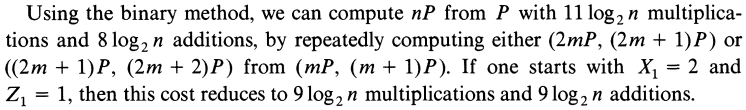
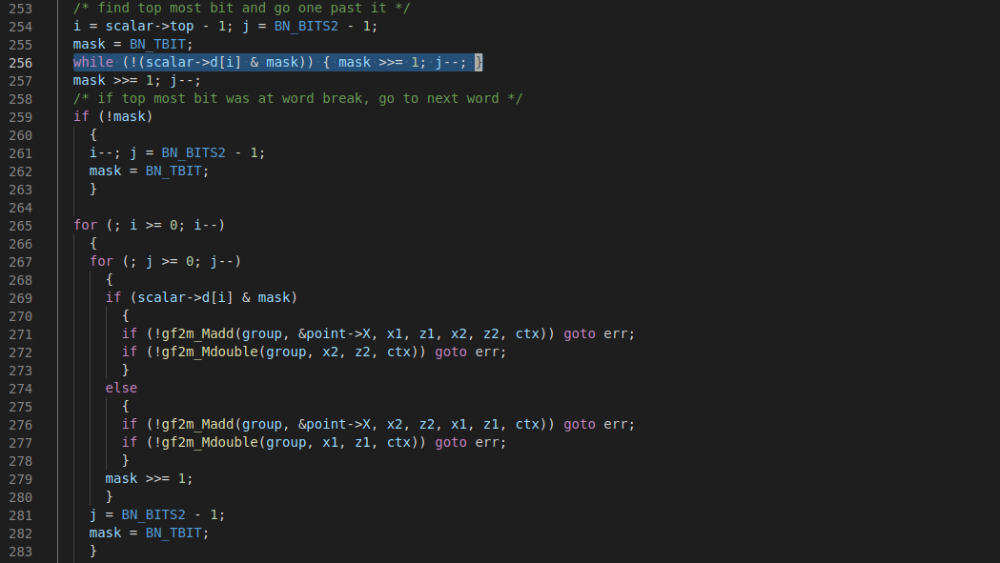

ECDSA: Sign
\[\begin{aligned} \textrm{Secret info} & : \textrm{private key } \textcolor{red}{d}; \textrm{nonce } \textcolor{red}{k}~(0 < d, k < n) \\ \textrm{Public info} & : \textrm{curve } E(\mathbb{F}_q); \textrm{base point } G \in E(\mathbb{F}_q), |G|=n; \\ & ~ \textrm{public key } [d]G; \textrm{hash function } h(\cdot) \\ \textrm{Message } & : m \\ \textrm{Signature } & : (r, s) \end{aligned} \]
\[\begin{aligned} r & = (\colorbox{blue}{[k] G})_x \mod n \\ s & = (h(m) + d r) k^{-1} \mod n \end{aligned} \]
ECDSA: Nonce Must Be Secured
\[\begin{aligned} r & = ([\textcolor{red}{k}] G)_x \mod n \\ s & = (h(m) + \textcolor{red}{d} r) \textcolor{red}{k}^{-1} \mod n \end{aligned} \] \[ \textrm{Knowledge of nonce } k \implies \textrm{Knowledge of private key } d \\ \]
\[ d = (s k - h(m)) r^{-1} \mod n \]
Elliptic Curve Scalar Multiplication: Double and add
\[ \textrm{Efficient algorithm to compute } [k] G \]
|
\[ \textrm{Example: } k = 25 = (11001)_2, G = 3 \] \[ \textrm{Start with } res = 0 \\ ~\\ \begin{matrix} (i) & & 4 & 3 & 2 & 1 & 0 \\ (k_i) & & 1 & 1 & 0 & 0 & 1 \\ (res) & 0 & 3 & 9 & 18 & 36 & \color{red}{75} \end{matrix}\] |
Doubld And Add Leaks Information
Point addition and doubling take different CPU cycles
In affine coordinates (one representation of points) \[\begin{aligned} P + Q & : I + 2M + S \\ [2] P = P + P & : I + 2M + 2S \end{aligned}\]Double and Add Leaks Information
|

reference [pg 11]
Scalar Multiplication: Montgomery's Ladder
Speeding the Pollard and elliptic curve methods of factorization by Peter L. Montgomery, 1987. (Full paper)
Scalar Multiplication: Montgomery's Ladder
\[ \textrm{Compute } [k] G, \textrm{thwarting SPA} \]
|
\[ \textrm{Example: } k = 25 = (11001)_2, G = 3 \] \[ \textrm{Start with } R0 = 0, R1 = 3 \\ ~\\ \begin{matrix} (i) & & 4 & 3 & 2 & 1 & 0 \\ (k_i) & & 1 & 1 & 0 & 0 & 1 \\ (R0) & 0 & 3 & 9 & 18 & 36 & \color{red}{75} \\ (R1) & 3 & 6 & 12 & 21 & 39 & 78 \end{matrix}\] |
The Devil Is In The Implementation
Leaking A Few Nonce Bits
Remote Timing Attack
- Collect certain amount of (message, signature) pairs
- Use timing leak to filter signatures with leading 0-bit runs than a fixed threshold
- Create a system of linear equations using filtered pairs
- Try solving the system to recover a single nonce using the LLL algorithm
- Use the nonce to recover private key
References:
Remote Timing
Attacks Are Still Practical by Billy B. Brumley and Nicola
Tuveri, 2011
Lattice
Attacks on Digital Signature Schemes by Nick A.
Howgrave-Graham and Nigel P. Smart, 2001
Mitigations
- Blinding: Brumley and Tuveri's fix in OpenSSL \[ \textrm{Compute equivalent } [\tilde{k}] G \textrm{, where} \] \[ \tilde{k} = \begin{cases} k + 2n & \text{if } \lceil\lg(k+n)\rceil = \lceil\lg n\rceil \\ k + n & \text{otherwise} \end{cases}\]
- RFC6979: Deterministic Usage of the Digital Signature Algorithm (DSA) and Elliptic Curve Digital Signature Algorithm (ECDSA): cf. Section 3.2
Leaking Secret Bits from Branching Conditions
Flush and reload attackCountermeasures
Three conditionsFood For Thought
- Does subzero leak? (cf. trezor-crypto/ecdsa.c)
- How much should we be worried?
Peter Montgomery (1947-2020)